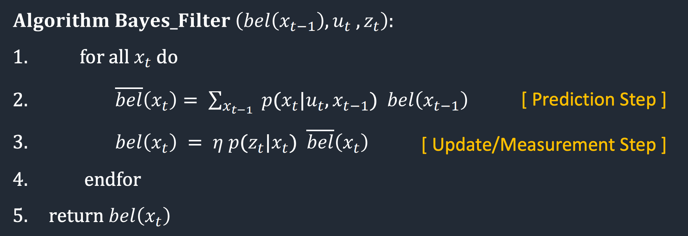
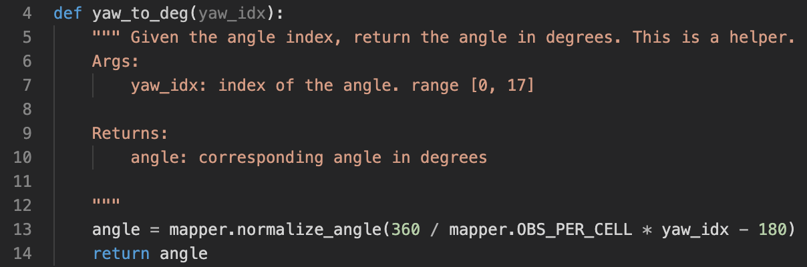
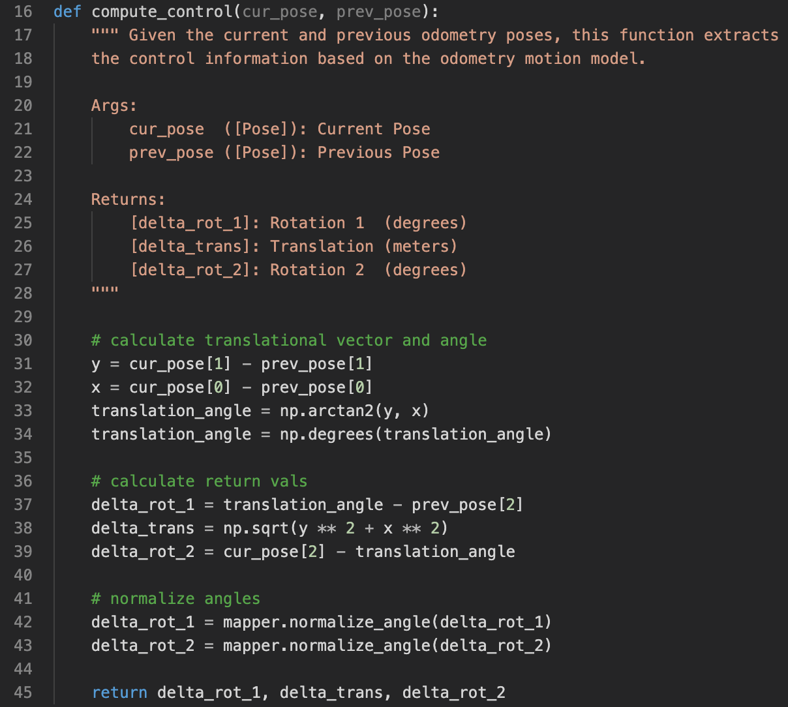
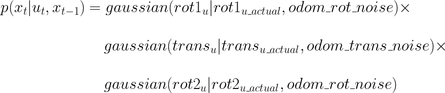
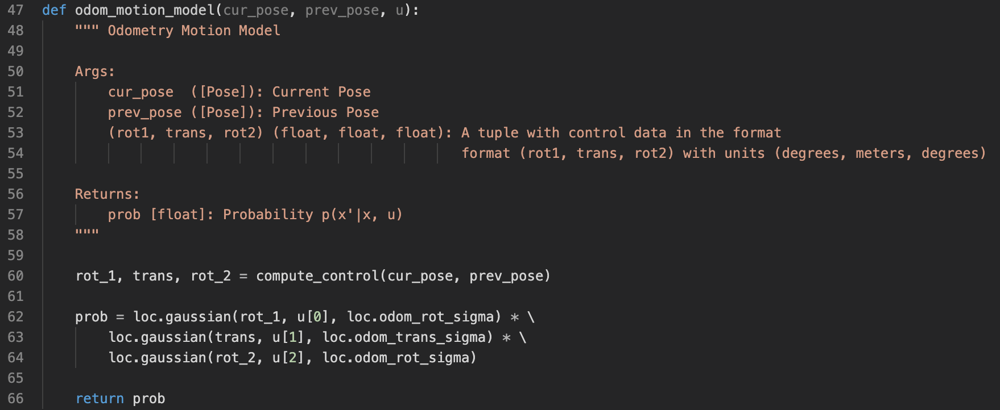
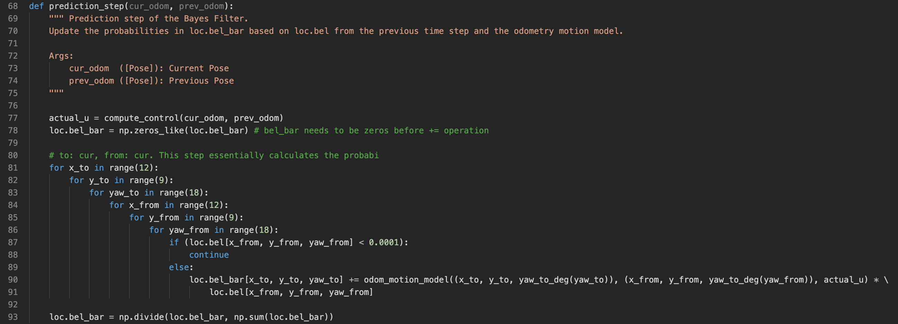
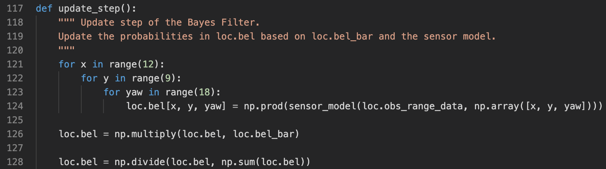
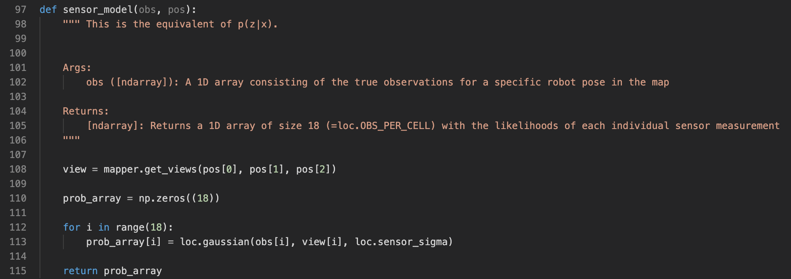

The purpose of this lab is to implement robot localization using Bayes filter. This lab is built on previous labs, including the mapping lab where we used the robot to measure outside environment and recreate a line-map, and the simulator lab where we have get familiar with using the simulator. In this lab, we are working only with the simulator, which contains the same map as the real-world map. We will implement our Bayes filter algorithm on the virtual robot in the simulator.
The rationale behind starting with the simulator instead of going straight into using the physical robot is that debugging with the simulator is much easier. We would like to make sure the Bayes filter algorithm software is implemented correctly. Then in the next stage (the following lab), we can focus on getting the communication between the robot and the laptop correct. This way, we will not have to deal with a possible difficult situation where we are debugging the robot and the algorithm at the same time...
Localization goal and state space
1. Talk about what localization is. 2. Talk about real robot state space (continuous) 3. Talk about discretized 3d grid space (with img) 4. talk about code implementation with index
 3D visualization of the discretized state space.
3D visualization of the discretized state space.
Bayes filter algorithm
 Bayes filter algorithmCode walkthrough
1. talk about what calls what
Walk through code with pictures. correspond to bayes filter algorithm
 yaw_to_deg helper function  compute_control function  Equations to calculate the probability of transition from one state to another given a control  Implementation of the odometry motion model  Implementation of Bayes algorithm's prediction step  Implementation of Bayes algorithm's update step Algorithm of the sensor model  Implementation of the sensor model